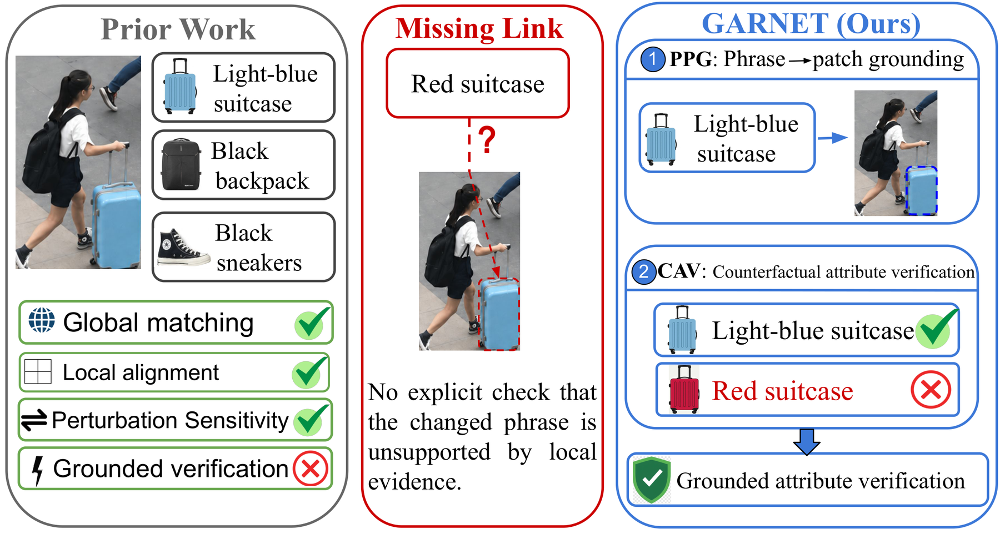
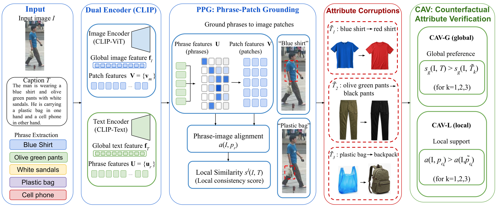
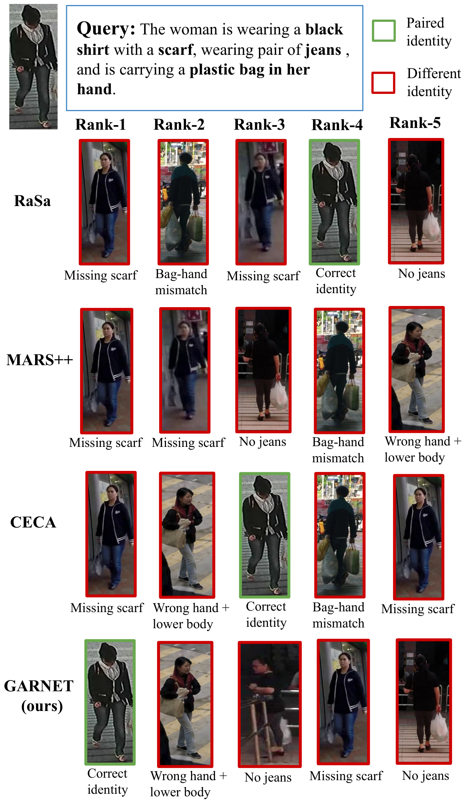

Abstract
Text-based person retrieval (TBPR) has progressed from global image–text matching to fine-grained phrase–region alignment, attribute-aware modeling, and perturbation-sensitive learning. These capabilities, however, do not by themselves guarantee that a specific changed attribute is verified against its corresponding local visual evidence. An otherwise correct description can therefore remain compatible with an image even when one decisive attribute is changed, because the corrupted phrase is not explicitly required to lose visual support.
We introduce GARNET, a grounded counterfactual attribute-verification framework that explicitly couples semantic corruption with local visual evidence. GARNET combines Phrase–Patch Grounding (PPG), which exposes phrase-specific support over image patches, with Counterfactual Attribute Verification (CAV). CAV-G requires the correct caption to outrank a controlled single-attribute corruption, while CAV-L requires the original changed phrase to receive stronger local support than its corrupted counterpart. Thus, GARNET moves from attribute correspondence or generic perturbation sensitivity toward explicit grounded attribute verification.
We evaluate standard retrieval on CUHK-PEDES, ICFG-PEDES, and RSTPReid, and use controlled verification diagnostics on CUHK-PEDES to directly test the targeted failure mode. GARNET remains competitive under conventional retrieval while reaching 91.92% Local C>C, improving the strongest evaluated prior local baseline by 10.40 points, with a signed local gap of Δℓ = 0.135.
Challenges and Motivation
TBPR aims to retrieve the pedestrian image that best matches a free-form natural-language description. The task is inherently fine-grained: different identities often share most of their appearance, while the decisive distinction may be a small semantic detail such as blue shirt versus red shirt, backpack versus handbag, or short sleeves versus long sleeves. A successful model must therefore determine not only whether an image and a caption are globally compatible, but also whether the specific attributes expressed in the query are supported by visual evidence.
Prior work has advanced three distinct capabilities — global cross-modal matching (CMPM/CMPC, CLIP, IRRA), fine-grained phrase/attribute-level alignment (ViTAA, UFineBench, MARS++, KPDM, QC-Align, CECA), and perturbation-sensitive learning (RaSa) — but none of them explicitly require that a specific changed attribute loses local visual support when it becomes visually inconsistent. This is the missing link GARNET targets.

No grounded verification
A high global image–caption similarity score does not guarantee every fine-grained attribute in the caption is visually correct — nothing explicitly checks the changed phrase against local evidence.
Implicit vs. explicit coupling
Fine-grained alignment and perturbation sensitivity are modeled separately in prior work; neither requires the exact corrupted attribute's local support to decrease when the attribute is changed.
Attribute-confusable distractors
Near-duplicate identities differing by one controlled attribute (color, clothing, carried object, pose/action) are the hardest, most realistic failure mode for retrieval systems.
Evaluation gap
Standard R@K/mAP retrieval metrics do not directly measure whether a model's preference tracks a single, controlled semantic change — motivating GARNET's diagnostic C>C / Δ protocol.
Proposed Method
GARNET is a CLIP-style dual-encoder framework (CLIP ViT-L/14) fine-tuned end-to-end, combining a Phrase–Patch Grounding (PPG) module that grounds caption phrases to image patches with a Counterfactual Attribute Verification (CAV) objective applied at both the global (CAV-G) and local (CAV-L) level. The model is first domain-adapted on the MALS person corpus (Stage A) and then fine-tuned with the full objective (Stage B).

Key components
Phrase Extraction & Counterfactual Construction
Visually verifiable attribute phrases are extracted from each caption; controlled single-attribute counterfactuals change exactly one phrase (color, clothing type, carried object, or pose/action) while preserving the rest of the description.
Dual-Encoder Representation
A CLIP-style image/text dual encoder produces global image/text features and patch/phrase-level token features, trained with identity-aware bidirectional Similarity Distribution Matching (SDM).
Phrase–Patch Grounding (PPG)
Derives a phrase-specific grounding score by max-pooling phrase–patch similarity, producing both per-phrase alignment scores and an aggregated local similarity used for CAV-L.
Counterfactual Attribute Verification (CAV)
CAV-G is a global hinge loss requiring the correct caption's global similarity to exceed that of its corrupted counterpart; CAV-L is a local hinge loss requiring the original phrase's grounding score to exceed the corrupted phrase's grounding score.
Auxiliary Objectives
A masked-language-modeling loss (with attribute-biased masking) and an identity (BNNeck) loss are added to strengthen the shared representation during fine-tuning.
Domain-Adaptive Pre-Training (Stage A)
The dual encoder is first pre-trained on the MALS person-domain corpus with SDM + MLM losses before PPG and CAV are introduced in Stage B fine-tuning.
Quantitative Results
Standard text-based person retrieval
| Method | Venue | CUHK-PEDES | ICFG-PEDES | RSTPReid | |||||||||
|---|---|---|---|---|---|---|---|---|---|---|---|---|---|
| R@1 | R@5 | R@10 | mAP | R@1 | R@5 | R@10 | mAP | R@1 | R@5 | R@10 | mAP | ||
| CLIP-ViT-B/16 | – | 68.19 | 86.47 | 91.47 | 61.12 | 56.74 | 75.72 | 82.26 | 31.84 | 54.05 | 80.70 | 88.00 | 43.41 |
| IRRA | CVPR'23 | 73.38 | 89.93 | 93.71 | 66.13 | 63.46 | 80.25 | 85.82 | 38.06 | 60.20 | 81.30 | 88.20 | 47.17 |
| RaSa | IJCAI'23 | 76.51 | 90.29 | 94.25 | 69.38 | 65.28 | 80.40 | 85.12 | 41.29 | 66.90 | 86.50 | 91.35 | 52.31 |
| APTM† | ACM MM'23 | 76.53 | 90.04 | 94.15 | 66.91 | 68.51 | 82.99 | 87.56 | 41.22 | 67.50 | 85.70 | 91.45 | 52.56 |
| RDE | CVPR'24 | 75.94 | 90.14 | 94.12 | 67.56 | 67.68 | 82.47 | 87.36 | 40.06 | 65.35 | 83.95 | 89.90 | 50.88 |
| CFAM | CVPR'24 | 75.60 | 90.53 | 94.36 | 67.27 | 65.38 | 81.17 | 86.35 | 39.42 | 62.45 | 83.55 | 91.10 | 49.50 |
| MARS++† | TOMM'25 | 77.89 | 90.68 | 93.91 | 71.46 | 68.50 | 82.29 | 86.43 | 45.69 | 67.80 | 86.65 | 91.55 | 53.23 |
| IAPTM (HCA) | ACM MM'25 | 77.44 | 91.23 | 94.61 | 68.92 | 66.95 | 82.34 | 87.06 | 40.13 | 69.70 | 86.95 | 92.45 | 53.72 |
| ICL | CVPR'25 | 77.91 | 90.27 | 94.14 | 69.13 | 69.02 | 82.45 | 87.36 | 41.21 | 70.55 | 85.95 | 91.65 | 53.68 |
| KPDM-L/14 | AAAI'26 | 78.02 | 91.49 | 95.00 | 69.71 | 69.13 | 83.46 | 88.10 | 42.78 | 67.95 | 86.35 | 91.65 | 52.97 |
| ALIGNER | TIFS'26 | 76.20 | 90.81 | 94.61 | 68.00 | 68.61 | 82.81 | 87.44 | 41.07 | 68.65 | 85.00 | 90.15 | 51.74 |
| CADA+QC-Align | CVPR'26 | 79.31 | 91.86 | 95.17 | – | 68.79 | 83.16 | 87.81 | – | 71.10 | 87.50 | 92.75 | – |
| CECA | CVPR'26 | 78.30 | 91.10 | 94.09 | 65.92 | 72.25 | 85.31 | 89.32 | 37.57 | 71.40 | 88.30 | 93.35 | 52.07 |
| GARNET† (ours) | – | 79.15 | 92.04 | 95.45 | 71.95 | 72.34 | 83.63 | 89.95 | 48.26 | 73.06 | 89.30 | 93.55 | 55.81 |
Bold = best, underline = second-best (as in the paper). GARNET achieves the best mAP on all three datasets and the best R@5/R@10 on CUHK-PEDES and RSTPReid.
Controlled attribute verification (CUHK-PEDES)
| Method | Representative capability | Attr-Conf. R@1 | Global C>C (%) | Δg | Local C>C (%) | Δℓ |
|---|---|---|---|---|---|---|
| IRRA | Global + implicit relation alignment | 93.26 | 86.73 | 0.055 | 58.14‡ | 0.008‡ |
| RaSa | Replaced-word / perturbation sensitivity | 94.38 | 86.21 | 0.058 | 41.40‡ | −0.012‡ |
| MARS++ | Attribute-aware learning | 95.45 | 84.28 | 0.065 | 34.63‡ | −0.015‡ |
| CECA | Fine-grained attribute correspondence | 93.26 | 85.95 | 0.051 | 81.52‡ | 0.034‡ |
| GARNET | Grounded counterfactual verification | 95.51 | 92.04 | 0.034 | 91.92 | 0.135 |
GARNET improves the strongest prior local baseline (CECA) by +10.40 points on Local C>C and by +0.101 on Δℓ — the diagnostic that directly measures grounded attribute verification.
Ablation Study
Core component-wise ablation
| Configuration | R@1 | mAP | Attr-Conf. R@1 | Global C>C | Local C>C | Δℓ |
|---|---|---|---|---|---|---|
| Baseline | 74.40 | 65.04 | 88.26 | 85.82 | – | – |
| + Stage A (MALS pre-training) | 76.37 | 66.96 | 90.38 | 86.43 | – | – |
| + Stage A + PPG | 78.15 | 68.64 | 91.38 | 89.95 | 88.05 | 0.106 |
| + Stage A + CAV-G | 78.45 | 69.04 | 92.05 | 90.72 | – | – |
| + Stage A + PPG + CAV-G | 77.84 | 68.65 | 94.38 | 90.46 | 89.86 | 0.115 |
| Full GARNET (+ CAV-L) | 79.15 | 71.95 | 95.51 | 92.04 | 91.92 | 0.135 |
Generic perturbation vs. controlled semantic corruption
| Supervision / variant | Attr-Conf. R@1 | Global C>C | Δg |
|---|---|---|---|
| Random caption negative | 90.49 | 83.18 | 0.016 |
| Random token replacement | 91.38 | 84.95 | 0.015 |
| Single-attribute corruption + CAV-G | 92.05 | 90.72 | 0.029 |
| PPG + CAV-G | 94.38 | 90.46 | 0.026 |
| Full GARNET (+ CAV-L) | 95.51 | 92.04 | 0.034 |
Local C>C by corruption type (supplementary)
| Variant | Color | Clothing | Carried Object | Pose / Action |
|---|---|---|---|---|
| PPG only | 96.79 | 83.27 | 90.48 | 83.05 |
| PPG + CAV-G | 98.72 | 84.01 | 93.12 | 86.44 |
| Full GARNET | 98.08 | 86.25 | 94.71 | 90.68 |
Color discrimination is already near-saturated after PPG+CAV-G, so CAV-L gives a small decrease there; clothing, carried-object, and pose/action categories all improve further with CAV-L.
What each component contributes
Stage A (MALS pre-training)
Person-domain pre-training alone raises R@1 and Attr-Conf. R@1, but does not meaningfully move Local C>C — domain adaptation strengthens the representation but does not by itself teach grounded verification.
PPG
Introduces phrase-specific grounding, establishing the first measurable Local C>C signal (88.05%, Δℓ=0.106) by exposing per-phrase visual evidence.
CAV-G
Adds global counterfactual preference supervision, pushing Attr-Conf. R@1 and Global C>C higher, confirming that targeted single-attribute supervision outperforms generic hard negatives (Table 4).
CAV-L
The final local hinge loss directly couples grounding scores for correct vs. corrupted phrases, raising Local C>C from 89.86%→91.92% and Δℓ from 0.115→0.135 — the component most responsible for GARNET's grounded-verification behavior.
Qualitative Results
Top-5 retrieval results for RaSa, MARS++, CECA, and GARNET on the same attribute-confusable query. Green borders denote the correct identity; red borders denote incorrect identities with the decisive query-relevant mismatch annotated below each result. Prior methods consistently rank attribute-confusable distractors above the correct identity, whereas GARNET retrieves the correct identity at Rank-1.

BibTeX
@inproceedings{bairwa2027garnet,
title = {From Attribute Alignment to Attribute Verification: {GARNET} for Text-Based Person Retrieval},
author = {Bairwa, Sachin Kumar and Dutt, Vandita and Pranay and Singh, Dinesh},
booktitle = {Proceedings of the IEEE/CVF Winter Conference on Applications of Computer Vision (WACV)},
year = {2027}
}